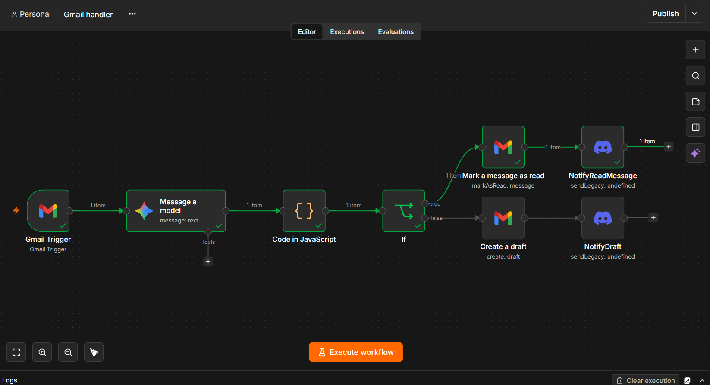
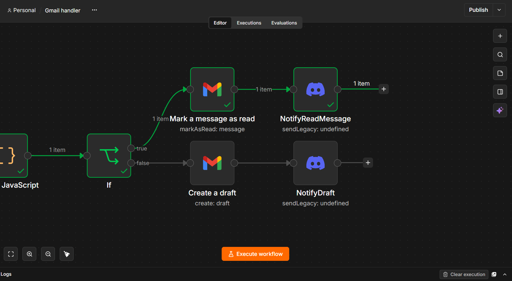
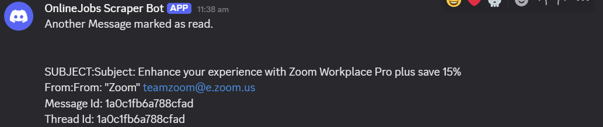

Virtual Assistant — Automation Specialist
Repetitive tasks, running on their own.
I'm Eugene — a virtual assistant who builds the workflows, bots, and scripts that take repetitive work off your plate, using UiPath, n8n, and Python. Also flexible with other virtual assistant tasks
About
Engineering background, automation instinct.
I'm a fourth-year Electronics Engineering student at the Technological University of the Philippines Manila and a DOST-SEI scholar. Somewhere between debugging circuits and writing bots, I found the part of engineering I like most: taking a process apart, finding where the time is going, and rebuilding it so it doesn't need a human in the loop anymore.
As a virtual assistant, that's what I bring to the table — not just task execution, but the instinct to notice when a task shouldn't be manual in the first place, and the tools to fix it.
I'm also a very flexible and hardworking individual, ready to learn and adapt at whatever comes.

Services
Where I plug in.
Five ways I can take work off your hands — from one-off scripts to fully managed bots.
Workflow automation
UiPath and n8n bots that handle data entry, approvals, and reminders end-to-end, so they run without you clicking through them.
Web & data scraping
Scripts that pull structured data from web sources and drop it straight into your spreadsheets, on whatever schedule you need.
Reporting & documentation
Automated report generation plus the SOPs and process docs that make sure your systems are maintainable after I hand them over.
Admin & inbox support
Calendar management, email triage, and data entry — handled directly where it makes sense, automated where it doesn't.
Process mapping & optimization
Auditing a manual workflow, documenting it clearly, and redesigning it for fewer steps and fewer errors.
Process
How a task goes from manual to automated.
Discover
We talk through the task, how often it happens, and where the time is actually going.
Map
I document the current process step by step, including the edge cases that usually get skipped.
Build
I develop the bot, script, or workflow — in UiPath, n8n, or Python, depending on what fits.
Deploy
Tested, documented, and handed over — or left running quietly in the background.
Monitor & refine
I check in on performance and tune it as your process changes.
Skills
The stack.
Experience
Where this came from.
- Designed and deployed UiPath workflows to automate repetitive business tasks and cut manual effort.
- Built data extraction bots that scrape web sources and write structured data straight into Excel.
- Automated routine data entry and form input, reducing human error on repetitive work.
- Mapped business processes with technical teams and translated them into working bot logic.
- Documented project frameworks and bot configurations so the automations stay maintainable.
- Ran technical review sessions, breaking down complex material for other students.
- Built and maintained a shared repository of study materials and coursework guides.
- Organized and led a course-wide event end to end — logistics, program flow, and scheduling.
Work samples
Automations in action.
An end-to-end n8n automation that completely streamlines the job hunt. Triggered by a single keyword search, this workflow executes the following pipeline:
- Data Scraping: Extracts the Job Description, Type, Wage, and Hours from listings on OnlineJobs.ph.
- AI Analysis: Uses the Google Gemini API (flash-3.1) to compare the job requirements against my resume (pulled via Google Docs API), generating a custom cover letter and a 1-100% Job Match score.
- Database Logging: Structures and inputs all extracted data and AI generations directly into a Google Spreadsheet.
- Automated Alerts: Triggers a Discord Webhook to deliver a final summary report the moment the run completes.
Workflow automation demo
Screen recording of my automated job scraper. Takes information from job listings posted on OnlineJobs.ph and inputs the data into a Google Spreadsheet readied by myself.
Web scraping → spreadsheet pipeline
Spreadsheet contains the output of the automation seperated in columns; Job Description, Job Type, Salary, Hours/Week, OnlineJobs.ph link, and and the generated CV.
Automated report generator
Upon finishing the workflow, I've linked my Discord webhook to automate a report notification upon completing the workflow. All Automated.
Work samples
AI Email Triage & Auto-Drafting.
An n8n inbox automation that functions as an executive assistant. Triggered automatically, this workflow categorizes incoming emails and executes the following pipeline:
- Automated Polling: Scans the Gmail inbox every minute specifically targeting unread messages.
- AI Triage: Uses the Gemini model (gemini-3.1-flash-lite) to generate a 2-sentence summary, identify the core request, determine urgency (High, Medium, Low), and write a professional draft reply .
- Conditional Routing: Evaluates the AI's urgency score to route the email . It automatically marks "Low" urgency messages as read immediately . For "Medium" or "High" urgency emails, it creates a formatted Gmail draft directly in the thread .
- Discord Alerts: Triggers specific Discord webhooks to send summary notifications detailing the sender, subject, and whether the email was marked as read or a response was drafted .

Automated polling & AI triage
Fetches unread emails every minute and passes them to Gemini to extract a summary, an urgency level, and a context-aware draft reply .

Urgency-based routing
Uses an IF node to parse the AI's JSON output . Low-priority emails are immediately marked as read to clear clutter, while important emails get a pre-written draft attached to the thread .

Real-time status alerts
Sends a customized payload to a Discord server containing the subject line, sender, and action taken (Read vs. Drafted) so I stay updated without manually checking the inbox .
Contact
Have a task that shouldn't be manual anymore?
Tell me what it is and how often it comes up — I'll tell you honestly whether it's worth automating.